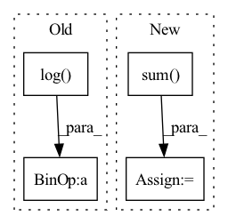

Pattern ID :1446
Before Change
eps = self.eps
loss = - target * torch.log(input + eps) - (1 - target) * torch.log( 1 - input + eps)
loss = loss.squeeze(dim=1).mean(dim=1)
if batch_mean:
loss = loss.mean(dim=0)After Change
if reduction == "mean":
loss = loss.mean(dim=dim)
elif reduction == "sum":
loss = loss.sum(dim=dim)
if batch_mean:
loss = loss.mean(dim=0)
In pattern: SUPERPATTERN
Frequency: 3
Non-data size: 4
Instances Fragment ID: 4191838
Project Name: tky823/dnn-based_source_separation
Commit Name: 56f95a42611aeaeb3499f097d347a17787656474
Time: 2021-12-04
Author: delta9guitar97@gmail.com
File Name: src/criterion/entropy.py
M Class Name: CrossEntropy
N Class Name: CrossEntropy
M Method Name: forward(4)
N Method Name: forward(4)
M Parent Class: nn.Module
N Parent Class: nn.Module
M File Name: src/criterion/entropy.py
N File Name: src/criterion/entropy.py
M Start Line: 44
M End Line: 47
N Start Line: 55
N End Line: 69
Before Change
rel_pos = rearrange(grid, "i c -> i 1 c") - rearrange(grid, "j c -> 1 j c")
if self.log_dist:
rel_pos = torch.sign(rel_pos) * torch.log( rel_pos.abs() + 1)
self.register_buffer("rel_pos", rel_pos, persistent = False)
rel_pos = self.rel_pos.float()After Change
rel_dist += (shape - 1) // make sure all positive
rel_dist *= strides
rel_dist_indices = rel_dist.sum(dim = -1)
// now select the bias for each unique relative position combination
bias = bias[rel_dist_indices] Fragment ID: 4191842
Project Name: lucidrains/make-a-video-pytorch
Commit Name: b6e0a17c5488b923d884272f7e46170352b0f0d5
Time: 2023-03-18
Author: lucidrains@gmail.com
File Name: make_a_video_pytorch/make_a_video.py
M Class Name: ContinuousPositionBias
N Class Name: ContinuousPositionBias
M Method Name: forward(1)
N Method Name: forward(1)
M Parent Class: nn.Module
N Parent Class: nn.Module
M File Name: make_a_video_pytorch/make_a_video.py
N File Name: make_a_video_pytorch/make_a_video.py
M Start Line: 110
M End Line: 126
N Start Line: 105
N End Line: 142
Before Change
// compute scoring gt and loss
score_gt = F.softmax(-distance_metric(pred_dict["traj"], gt_dict["y"])/self.temper, dim=-1)
score_loss = torch.sum(torch.mul(- torch.log(pred_dict["score"]) , score_gt))
loss += self.lambda3 * score_loss
loss_dict = {"tar_cls_loss": cls_loss, "tar_offset_loss": offset_loss, "traj_loss": reg_loss, "score_loss": score_loss}After Change
offset = pred_dict["offset"][gt_idx[:, 0], gt_idx[:, 1]]
// cls_loss, indices = torch.topk(cls_loss, self.m, dim=1) // largest 50
cls_loss = cls_loss.sum()
offset_loss = F.smooth_l1_loss(offset, gt_dict["offset"], reduction="sum")
// loss += self.lambda1 * (cls_loss + offset_loss) / (1.0 if self.reduction == "sum" else batch_size)
loss += self.lambda1 * (cls_loss + offset_loss)
Fragment ID: 4191840
Project Name: henry1iu/tnt-trajectory-predition
Commit Name: 3407448e60091157b38747900b5a0131660c974c
Time: 2022-03-21
Author: liu.jb.henry@gmail.com
File Name: core/loss.py
M Class Name: TNTLoss
N Class Name: TNTLoss
M Method Name: forward(5)
N Method Name: forward(5)
M Parent Class: nn.Module
N Parent Class: nn.Module
M File Name: core/loss.py
N File Name: core/loss.py
M Start Line: 97
M End Line: 117
N Start Line: 109
N End Line: 128